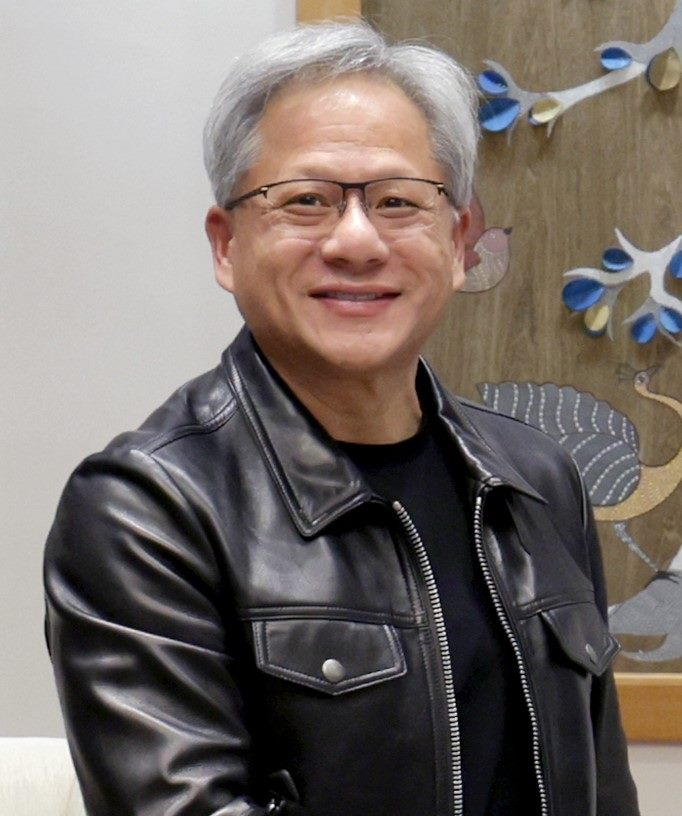

‘AI 거품’ 공포 확산…젠슨 황 퇴진 충격 속 대만증시 1991년 이후 최악의 한 주, 코스피도 5% 급락

엔비디아는 지난 12일 이사회 발표를 통해 젠슨 황이 사장·최고경영자(CEO)·이사직에서 즉시 물러난다고 밝혔다. 엔비디아 공시에 따르면 임시 CEO는 콜레트 크레스 수석부사장 겸 최고재무책임자(CFO)가 맡아 후임이 정해질 때까지 CFO 직도 겸하며, 하비 C. 존스가 회사 역사상 첫 이사회 의장으로 선임됐다. 회사는 사임 사유를 밝히지 않았고, 이사회는 내부·외부 후보를 모두 놓고 정식 후임자를 물색 중이다. 33년간 회사를 이끈 창업자의 갑작스러운 퇴장은 AI 산업의 ‘돈줄’ 역할을 해 온 엔비디아의 리더십 공백 우려로 번졌다.
광고 문의 · 300×250대만 연합보(聯合報)는 이후 시장에 ‘포스트 젠슨 황 시대에 대한 불안’이 퍼지며 AI 관련주가 업종을 가리지 않고 매도됐다고 전했다. 연합보에 따르면 16일 대만 가권지수는 하루 6% 떨어졌고, 파운드리·반도체 설계·패키징·PCB·메모리·광통신·냉각 등 AI 관련 10개 업종이 일제히 하락했다. TSMC는 5.7%, 훙하이(폭스콘)는 9.3%, 미디어텍은 7.8% 내렸다. 시장에서는 이를 AI 기업 가치에 대한 본격적인 ‘수정’ 국면으로 보는 시각이 힘을 얻고 있다.
월가 공포지수 3월 말 이후 최고, 비트코인 6만 달러 붕괴
로이터통신에 따르면 미국 변동성지수(VIX)는 20일 30선에 도달해 3월 말 이후 가장 높은 수준을 기록했다. 앞서 19일(현지시간) 뉴욕증시에서는 나스닥지수가 2.25%, S&P500지수가 2.02% 하락했고, S&P500은 6거래일 연속 내림세를 보였다. 비즈니스코리아에 따르면 같은 날 엔비디아는 3.30%, AMD는 7.7% 급락하며 반도체주 전반을 끌어내렸다. 로이터는 젠슨 황의 갑작스러운 사임이 투자자들을 동요시킨 핵심 요인 중 하나라고 짚었다.
큰 기대 속에 19일 나스닥에 상장한 Anthropic도 분위기를 반전시키지 못했다. 야후 파이낸스에 따르면 Anthropic 주가는 상장 첫날 111.50달러에 출발했으나 이튿날인 20일 10% 가까이 밀려 약 87.50달러를 기록했다. 공모가 83달러는 아직 웃돌고 있지만, 대형 상장에 자금이 몰리면서 기존 빅테크와 AI주에서 돈이 빠져나갔다는 분석도 나왔다. 가상자산 시장도 흔들렸다. 같은 보도에 따르면 비트코인은 7월 이후 처음으로 6만 달러 선이 무너져 한때 5만8811달러까지 떨어졌고, 한 주 새 약 13.8% 하락했다. 19일 미국 비트코인 현물 상장지수펀드(ETF)에서는 5억8230만 달러가 순유출됐다.
대만 ‘최악의 한 주’, 한국은 ‘검은 금요일’
타이베이타임스에 따르면 대만 가권지수는 20일 하루에만 6.23% 떨어지며 주간 낙폭이 18% 가까이로 확대돼 1991년 이후 최악의 한 주를 보냈다. 지수는 10월 6일 기록한 사상 최고치보다 4분의 1 이상 낮아졌고, 연초 대비 상승률은 약 24%로 줄었다. 기술주가 지수의 70% 이상을 차지하는 구조 탓에 충격이 컸다. 금융감독관리위원회는 공매도 제한을 강화해 차입 주식의 장중 공매도 주문을 직전 30일 평균 거래량의 1%로 묶었으며, 이번 분기 외국인 순매도는 560억 달러를 넘어섰다.
한국 증시도 직격탄을 맞았다. 비즈니스코리아에 따르면 20일 코스피는 5.21% 급락한 4869.96으로 마감해 10개월 만의 최저치를 기록했고, 코스닥도 5.71% 떨어진 645.68에 장을 마쳤다. 삼성전자는 7.01%, SK하이닉스는 5.92% 하락했으며, 외국인은 유가증권시장에서 약 1조1340억 원을 순매도했다. 원·달러 환율은 1336.2원으로 6.2원 올랐다. 반도체 대형주 비중이 큰 한국과 대만이 AI 투자 회의론의 최전선에 놓였다는 점에서, 당분간 엔비디아 후임 인선과 미국 금리 경로가 아시아 증시의 방향을 가를 변수로 꼽힌다.
· 엔비디아 공시
· 聯合報
· 로이터
· 야후 파이낸스
· Taipei Times
· 비즈니스코리아